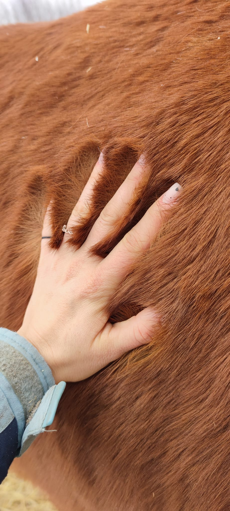
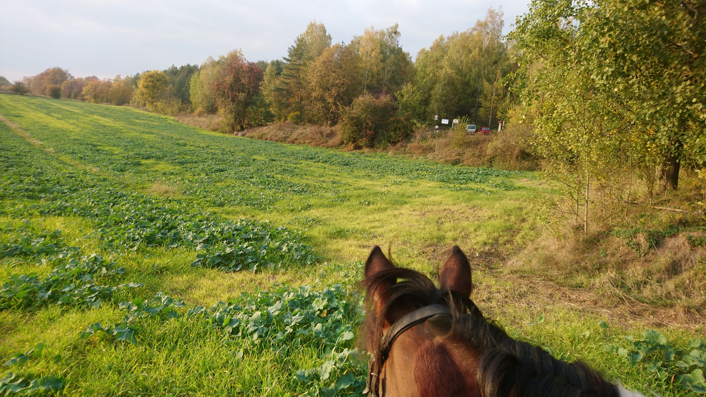
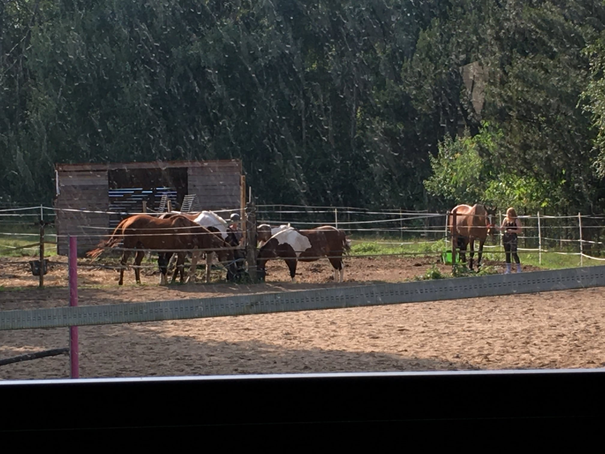

Posty edukacyjne

Za wszystkie nie odpowiem, ale tym naszym zimno nie ma 🙂 Za to, że koniowi jest ciepło odpowiada przede wszystkim układ pokarmowy, dlatego w czasie zimy bardzo ważne jest odpowiednie karmienie konia (zawsze jest ważne, ale zimą warto coś w karmieniu zmienić, dodać itp). Duże znaczenie ma też charakterystyka rasy i to jak koń zarasta sierścią - np kucyki, hucuły produkują grubszą okrywę włosów niż np konie czystej krwi arabskiej. Samo naprodukowanie sierści nie wystarczy. Żeby spełniała ono swoje zadanie sierść musi być sucha i czysta, bez zaklejek. Dlatego nawet w dniu, kiedy konie mają wolne powinno się pofatygować rozczyścić konia chociażby słomą. Konie stojące na zewnątrz tak jak u nas są w stanie się dostosować do warunków i produkują na zimę większą ilość sierści i tłuszczu niż konie, które stoją w stajni. Trzeba pamiętać, że to człowiek wsadził konia do stajni 🙂 Czy warto konia docieplać derką? To zależy. I tak na prawdę do każdego konia możemy dobrać indywidualną odpowiedź. Nasze stoją na dworze i przy sprzyjających warunkach pogodowych derek na sobie nie mają. Zakładamy wtedy gdy mocno wieje, pada deszcz lub na noc gdy jest na prawdę zimno. Ale można też spotkać konie stojące w ciepłej stajni, które mają na sobie nawet i 3 derki. O co chodzi? 🤔 Powód jest prosty, taki koń najczęściej jest po prostu ogolony, więc nie ma swojej naturalnej ochrony przed zimnem. A jeśli nie jest ogolony a ma derkę na sobie? Właściciel konia w ten sposób ułatwia sobie trochę robotę, ponieważ dogrzewany derką koń stojący w stajni produkuje mniej sierści, bo nie jest mu potrzebna, bo jest mu ciepło. Dzięki temu, że sierści jest mniej i zwykle jest też krótsza łatwiej się konia czyści 🙂 a stojący w derce najczęściej pod samą derką jest czysty, wystarczy więc tylko przetrzeć miękką szczotką ściągając kurz 💪 i w 15 minut koń czysty i osiodłany 😁 Ile koni tyle sposobów na opiekę nad nimi 🙂 Zdjęcia przedstawiają długość sierści naszych koni. Kto jest w stanie rozpoznać co to za rumaki? 😁 Będę wdzięczna jeśli ktoś, kto ma ogolonego konia lub tylko derkowanego doda zdjęcie w komentarzu dla porównania 🙂

Nie sztuką jest wsiąść na konia, który reaguje na jakiekolwiek bodziec łydką (a raczej piętą..) a w szczególności chodzący na głos i nim galopować po ścianie... Sztuką jest wsiąść na konia, który czeka na prawidłowe pomoce jeździeckie i poprowadzić go tam, gdzie my chcemy żeby szedł (wolty, ósemki itd) i w takim tempie jakim to my chcemy 👍 Złapać się siodła, kopnąć z pięty i użyć głosu do zagalopowania to potrafi tak na prawdę po 2 minutach ktokolwiek wzięty z ulicy i posadzony na konia 👍 My nie akceptujemy czegoś takiego. Nie akceptujemy bezwładnego obijania tyłkiem pleców konia... Szarpania za delikatny pysk konia łapiąc równowagę... A już kompletnie widząc coś takiego nie pozwolimy skakać przez przeszkody 😱 nawet jeśli miały by to być wysokości sięgające 5cm. Jest ogromna różnica między siedzeniem "W siodle" a "NA siodle"... Przede wszystkim jazda musi być BEZPIECZNA. Zarówno dla konia jak i jeźdźca. Nie jeździmy w tereny z osobami, których nie widzieliśmy nigdy przedtem jak sobie radzą z koniem. Dlaczego? Bo skąd mamy wiedzieć, czy taka osoba sobie poradzi gdy np spod nóg konia na polu wybiegnie zając. Koń uskoczy w bok a niedoświadczony jeździec zostaje w miejscu 👍 ekstra sprawa. I nie przekonuje nas argument, że w innej stajni jeździłeś/jeździłaś w tereny. U nas zanim zdecydujemy, żeby pojechać w teren trzeba odbyć minimum jedną jazdę sprawdzającą. 👍👍

Zasady panujące na ujeżdżalni 📌 Przedstawiamy Wam zasady panujące na ujeżdżalni w naszej stajni: 1.Podczas jazdy bezwzględnie obowiązuje kask. 2.Należy zachowywać się bezpiecznie: nie krzyczeć, nie zajeżdżać drogi innym jeźdźcom. Osoby obserwujące proszone są o nie płoszenie koni oraz powinny stać w miejscu bezpiecznym dla nich jak i dla użytkowników ujeżdżalni. 3.Obowiązuje "ruch prawostronny" (mijamy się lewymi rękami). 4.Osoba jadąca wyższym tempem ma pierwszeństwo na ścianie. 5.Informujemy o własnych zamiarach. 6.Zachowujemy bezpieczne odległości między końmi. 7.Psy mogą przebywać na ujeżdżalni tylko z właścicielem i na smyczy. 8.Stosujemy się do poleceń instruktora. 9.Nie pozwalamy koniowi jeść podczas jazdy. 10.Dopasowujemy bezpieczną długość strzemion. Jeśli instruktor zalecił ich wydłużenie lub skrócenie należy dostosować się do polecenia. Regulamin ujeżdżalni jest widoczny po prawej stronie przy wejściu do stajni, w każdym momencie można przypomnieć sobie panujące zasady 🙂